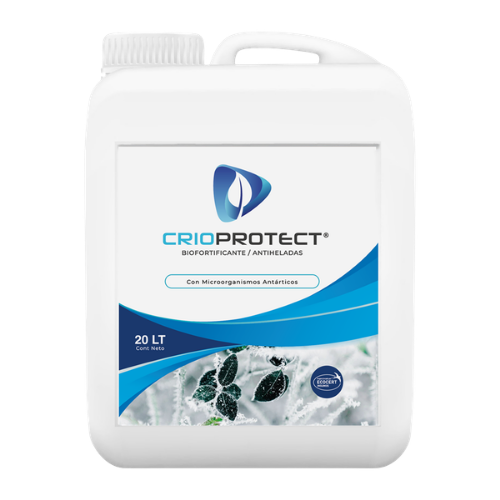
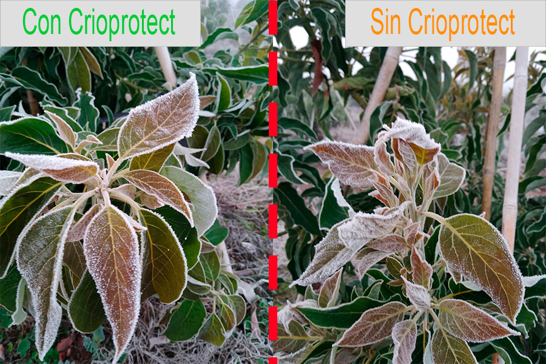

Formulación a partir de bacterias antárticas y biopolímeros que activan las defensas naturales del cultivo frente a las heladas. Sin afectar el suelo ni el medioambiente.
Elige tu formato
Crioprotect no cubre la planta: activa sus defensas para que resista la helada desde adentro.
Microorganismos aislados de plantas que sobreviven a −40°C, expertos en resistir el frío extremo.
Potencian la acción de las bacterias y refuerzan la barrera natural del cultivo frente a la helada.
Estimula al cultivo a defenderse solo, mejorando su apariencia y vigor durante la temporada.

En la temporada 2022 a 2023, Crioprotect protegió más de 2.000 hectáreas en Chile. Agricultores de papas, cerezos, paltos y uva de mesa resistieron heladas consecutivas sin daños significativos.
“Resistimos 6 heladas consecutivas de −2 a −3°C sin sufrir daños significativos”, relata Ángel Castro, productor de papas en Talagante.
Ver casos de éxito →Dosis, pH, compatibilidad y métodos de aplicación (drone, turbo, riego diluido). El documento más importante para aplicar bien el producto y proteger tu inversión.
Conversa con nuestro equipo y arma la dosis ideal para tu cultivo y tu superficie.